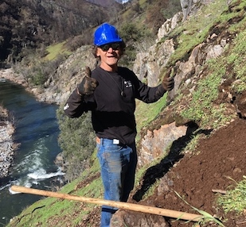

Beginnings
In October 2014, Bill King and Walter Wall backpacked a challenging 25 miles from Wawona to Savage’s Trading Post via the notorious South ForkMerced River Trail to witness the lore of poison oak, heat, rattlesnakes and forgotten trails. What they experienced was a canyon rich in wilderness qualities and marked with alluring cultural mystery. The trail, however, was vanishing, subjected to nature’s cycle of rain, erosion, fires and regrowth of plants. The South Fork Trailblazer volunteer group was formed soon thereafter, and in partnership with the Upper Merced River Watershed Council and the Sierra National Forest, the local community began to refurbish the trails in the South Fork watershed. By 2019, the scope of work expanded for reasons that reflected the interests of the community- namely for health, prosperity and enjoyment of our public lands, and the South Fork Trailblazers is now a project of the larger Mariposa Trails organization.
Our Vision
"All things in the world are two. In our minds, we are two- good and evil. With our eyes we see two things- things that are fair and things that are ugly. We have the right hand that strikes and makes evil and the left hand full of kindness near the heart. One foot may lead us to an evil way, the other foot may lead us to good. So are all things two, all two." -- Eagle Chief - Pawnee
Being accountable in the relationship between "taking" and "giving" from the land is foundational to the work of Mariposa Trail s. Mariposa Trails recognizes the gifts from nature and embraces the idea of "paying it forward," knowing that our health, prosperity and enjoyment are rooted in our access to the earth, and our care of it.
Mission Statement
In partnership with public and private entities, Mariposa Trails works to create and maintain a lasting trail network in Mariposa County through initiatives and programs that create space and activities that benefit the health of the individual, the prosperity of the community and our relationship with nature.
Council, Fidiciary and Community Volunteers
A council of trail advocates advises and guides Mariposa Trails founder Bill King. As the organization grows and obtains incorporated non-profit status, a board of directors will be formed. The Upper Merced Watershed Council acts as the group fudiciary. Volunteers are the heart of the Mariposa Trails organization, shaping its vision, enlivening its mission, and achieving its goal to maintain and promote recreational trail access for hikers, runners, cyclists and equestrians.
Bill King

Marty Acree

Jeff Gabe

Scott Fiester
Michael Seymour
Sally Martinez
Shelly Kniss
Ursula Stock
Partners
Mariposa Trails believes that planning, building, maintaining and enjoying local trails takes community effort and works with non-profit partners, community organizations, government agencies and special districts to accomplish its vision, mission and goals.
NON-PROFIT PARTNERS
- Upper Merced River Watershed Council
COMMUNITY ORGANIZATIONS
- Mariposa Museum and History Center
- HumanityRunning.org (Merced Canyon Endurance Runs)
GOVERNMENT AGENCIES AND SPECIAL DISTRICTS
- Sierra National Forest
- Mariposa Conservation District
- Mariposa County Unified School District